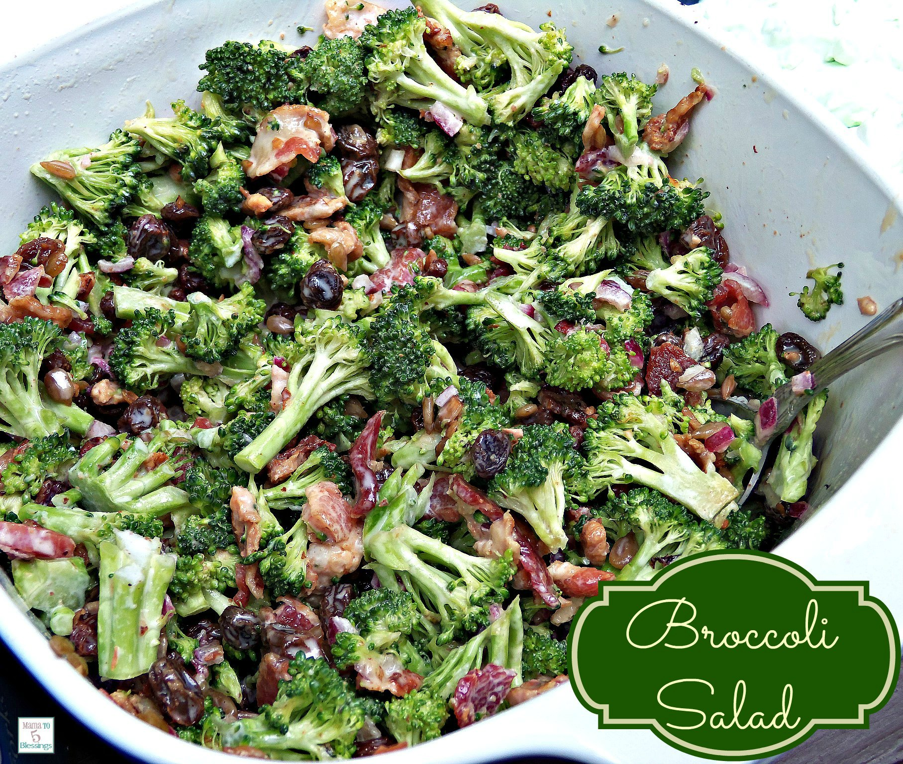

Broccoli salad

A delicous broccoli salad with sweet and savory elements .
Broccoli salad is one of my favorite side dishes. It’s perfect for serving alongside Easter dinner and is a simple and refreshing side dish for summer parties and pot lucks. It can be thrown together in under fifteen minutes and I guarantee you that at least one person is going to ask for the recipe, wherever you bring it.
Ingredients
- 1 package of bacon
- 1 head of fresh broccoli
- 1/4 cup of red onions chopped
- 1/2 cup of raisins
- 1/4 cup of sunflower seeds
- 1 cup of mayonnaise
- 1/2 cup of white sugar
- 3 tbsp apple cider vinegar
Instructions
- Place bacon in a large skillet or your preferred cooking method and cook till crispy. Drain on paper towel, crumble and set aside.
- Chop broccoli florets into bite size pieces. In a medium bowl combine broccoli with red onions, raisins, crumbled bacon and sunflower seeds.
- In a small bowl whisk together the mayonnaise, apple cider and sugar. Pour over the broccoli mixture and toss until combined.
- Refrigerate for a few hours before serving.
Back to Home